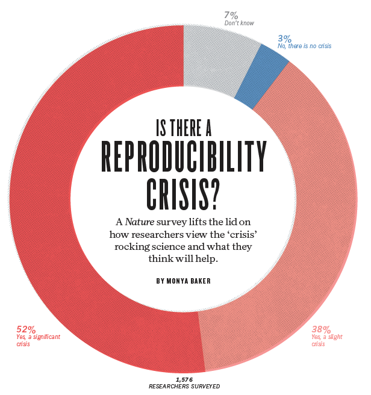
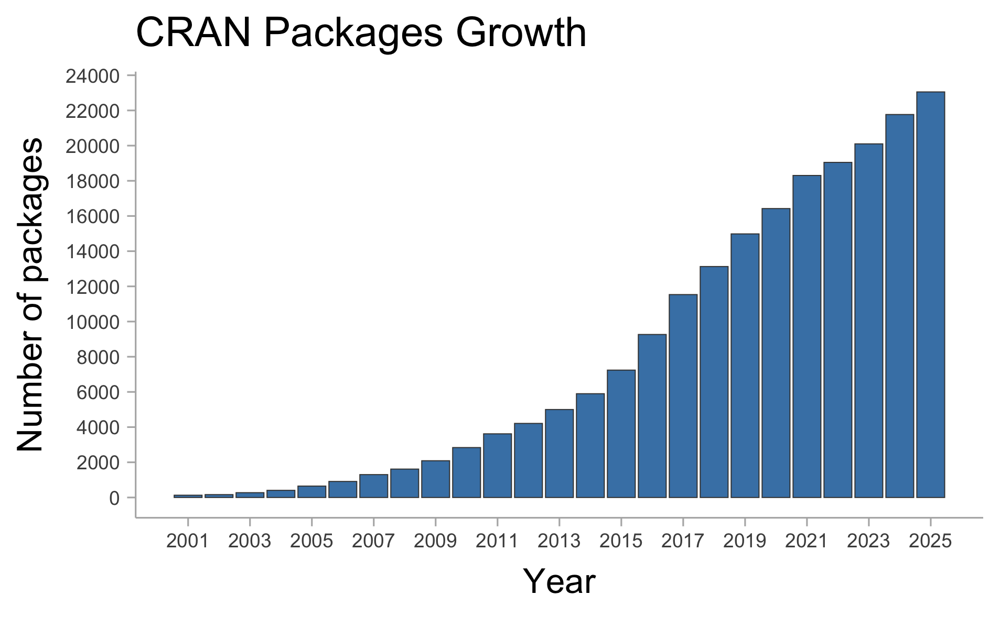

Reproducible
Data Science for Ag
Introductions 💬
i. Who are you and why enrolling on this course?
- Research project, career goals…
1. How this course works
Learning Goals 📌
Reproducibility: understand the principles and importance of reproducible data analysis.
Data manipulation: develop proficiency in R, including key data structures, packages, and functions to read, clean, transform, and organize datasets.
Data visualization: create informative and aesthetically pleasing visualizations of data.
Modelling and iteration: apply various algorithms and statistical models common to plant agriculture, and implement techniques to handle multiple datasets simultaneously.
Professional reporting: produce professional reports for sharing results.
Version control: manage the basics of Git and Github for collaborative projects.
A hands-on learning model
- Live coding sessions (you code along with me)
- Focus on doing, not just reading about tools
- Class time is for:
- building workflows
- troubleshooting together
- practicing reproducible habits
What you’ll leave with
- The ability to complete a reproducible analysis workflow
- An understanding of main models used in agriculture data science
- Confidence reading/writing Quarto (
.qmd) documents - A lot of templates to re-use in the future
- A portfolio-ready project
Course-Assessment
Three main components
- Quizzes / short coding assignments — 30%
- 5 total (asynchronous)
- lowest 2 dropped
- Semester project — 50%
- groups of 2
- Analysis of your own dataset (or provided if you don’t have one)
- Final exam — 20%
- On-line, asynchronous, open-book
Semester project (50%)
Expectations
- Use reproducible practices throughout (files, code, and narrative)
- Clear questions, clean data, and transparent methods
- Professional communication (figures, tables, interpretation)
Milestones
- Proposal (10%)
- Initial report (20%)
- Presentation (20%)
- Final report (50%)
2. Core concepts
Key Definitions 📖
Data Science: Extracting insights from data using algorithms and statistical methods.
Data Literacy: Skills to read, interpret, and analyze data.
Reproducibility: Ensuring analyses can be recreated by others.
Why does reproducibility matter?
Trustworthy results,
transparency, &
collaboration in research.
Challenges in Data Literacy 🌐
- Diverse data sources (weather, soil, crop data)
- Standardization issues across datasets
- Data skills gap among ag professionals
Why does it matter?
It is the #1 skill-gap in the job market:
- Academia,
- Industry,
- Government, NGOs, etc.

Is there a REPRODUCIBILITY CRISIS in science?
YES
A Nature survey with ~1,600 researchers found that
+70% failure rate to reproduce another scientist’s experiments
+50% have failed to reproduce their own experiments
Main causes: selective reporting, weak stats, code/data unavailability, etc.
Why Reproducibility in Agriculture?
Agriculture research relies heavily on environmental data, often variable and complex.
We have complex challenges 🗒️
- Variability due to environmental factors, soil types, and weather patterns.
- Complex datasets involving long-term studies, geographical variability.
Opportunities ✅
- Reproducibility helps stakeholders make reliable, data-driven decisions.
- Ensures scientific findings are reliable and valid.
- Facilitates collaboration, accountability, and efficiency among researchers and practitioners.
Challenges in Ag-research
REPRODUCIBILITY 💻
Limited capability to reproduce analyses & results
DATA are rarely shared, CODES even less
ACCESSIBILITY 📲
- Yet we are not translating enough science into flexible, and transparent decision tools.
“But it all starts with …”
EDUCATION 🎓
- Limited curriculum in applied data science
3. What is R?
What is R? 🧮
- R is a programming language and environment primarily for statistical analysis, data visualization, and data science.
- Known for its extensive statistical libraries, data manipulation capabilities, and graphics.
- Widely used in fields like data science, bioinformatics, agriculture, and social sciences.
Brief History of R 📜
- Origin: Developed in the early 1990s by Ross Ihaka and Robert Gentleman at the University of Auckland, New Zealand.
- Inspiration: R is an implementation of the S language, designed at Bell Laboratories for data analysis.
- Open Source: Released as free, open-source software, leading to a large community of users and contributors.
- Popularity: Today, R is one of the top programming languages for statistical analysis and data science.
- CRAN: the Comprehensive R Archive Network, which hosts thousands of packages was developed in 1997 by Kurt Hornik & Fritz Leisch.

Ihaka, Gentleman
Packages
There are currently 23,052 of packages (on CRAN only).

4. Alternatives to R
R vs. Excel for Data Wrangling 📊
- Excel: Known for ease of use, popular among business and finance professionals.
- Pros: Intuitive, good for small datasets and quick analysis.
- Cons: Limited in handling large datasets, lacks reproducibility.
- R: Provides powerful data manipulation packages (e.g.,
dplyr,tidyr).- Pros: Handles large datasets efficiently, supports complex transformations, fully reproducible.
- Cons: Requires programming knowledge, steeper learning curve than Excel.

- Tip: R is highly scalable and is ideal for projects requiring automation, reproducibility, and handling large datasets.
R vs. SAS for Statistical Analysis 📉
- SAS: A powerful statistical software suite used widely in industries such as healthcare and finance.
- Pros: Robust for regulatory environments, highly standardized.
- Cons: Proprietary and costly, limited community contributions.
- R: Offers a vast array of statistical packages and flexibility in method implementation.
- Pros: Free and open-source, customizable, strong community support.
- Cons: Requires more coding and configuration for regulatory standards.

- Comparison: R is often chosen for research and academia due to its flexibility and customization, while SAS remains strong in industries needing strict compliance and control.
R vs Python 🔍
- R, & Python are popular languages in data science and research.
- Each language has unique strengths, ideal use cases, and licensing considerations.


R: Strengths and Use Cases 🧮
- Designed for Statistics: R is optimized for statistical analysis, making it ideal for research and academia.
- Visualization: Excellent data visualization libraries like
ggplot2. - Licensing: Licensed under GPL; many packages are also GPL, with some using MIT or BSD.
Ideal Use Cases:
- Data analysis, visualization, and complex statistical modeling.
- Research and academia where open-source, reproducible code is needed.
- Licensing in Production: GPL may restrict proprietary use; check package licenses carefully.

Python: Strengths and Use Cases 🐍
- General-Purpose Language: Python is popular for both data science and software development.
- Machine Learning & AI: Extensive libraries for ML and AI, such as
scikit-learn,TensorFlow. - Licensing: PSFL (Python Software Foundation License), highly permissive for proprietary use.
Ideal Use Cases:
- End-to-end development, from data wrangling to ML and web development.
- Production-ready ML and AI applications.
- Licensing in Production: Permissive licenses allow closed-source use, making Python production-friendly.

Comparison Summary 📊
- Excel: User-friendly, ideal for simple tasks, but limited for complex data wrangling.
- SAS: Industry-standard for statistical analysis with regulatory requirements, but costly and less flexible than R.
- R: Best for statistical analysis and visualization, but GPL license may restrict use in proprietary products.
- Python: Strong in ML and AI with highly permissive licensing, making it ideal for production.
| Feature | R | Python |
|---|---|---|
| Primary Strength | Statistics & Visualization | General-purpose, ML, AI |
| Performance | Moderate | Moderate |
| Licensing | GPL (core), MIT, BSD (some) | PSFL, highly permissive |
| Production Use | Limited by GPL | Very friendly for proprietary |
Comparison Summary II 📊
Choosing the right tool depends on:
- your project’s requirements,
- team structure & skills, and
- licensing needs for research vs. production.
- R: Best for statistical analysis and visualization, but GPL license may restrict use in proprietary products.
- Python: Strong in ML and AI with highly permissive licensing, making it ideal for production.
5. Why R, posit cloud and version control?
Why R?
- 1. Open-Source
- Free to use and modify, with contributions from a large community.
- 2. Multi-Platform
- Runs on Windows, macOS, and Linux, making it versatile for collaboration.
- 3. Community Support
- Strong online help through forums, tutorials, and dedicated resources.
- 4. Continuous Development
- Regular updates keep R on the leading edge of data science.
- 5. Reproducible Workflows
- Tools like Rmarkdown and Quarto facilitates the job.

Why RStudio?
- 1. An interface to R
- Provides a user-friendly environment to work with R.
- 2. Integrates various components of an analysis
- Combines data, code, and output in one place, simplifying the workflow.
- 3. Colored syntax
- Highlights code with colors, making it easier to read and spot errors, improving code clarity.
- 4. Syntax suggestions
- Offers autocomplete suggestions, which speeds up coding and reduces mistakes.
- 5. RStudio panels
- Panels for console, scripts, files, and plots, giving quick access to all elements.

Rstudio panels

Why posit cloud?
- 1. Learn how to use a cloud service
- Gain experience with cloud-based tools, increasingly important in data science.
- 2. Access from anywhere
- Access R and RStudio directly from your web browser without any setup.
- 3. Collaboration
- Share projects easily with others, facilitating teamwork and joint analysis.
- 4. It’s free for you
- You’ll have free access to Posit Cloud through this course (this semester).

Why version control? 🔄
- 1. Track Changes
- Maintain a complete history of edits, making it easy to identify when and why changes were made.
- 2. Collaborate Seamlessly
- Multiple users can work together without overwriting each other’s work, enhancing teamwork.
- 3. Ensure Data Integrity
- Protect primary data by using branches for experimentation, avoiding accidental overwrites.
- 4. Boost Reproducibility
- Access exact versions of code and data, enabling others to reproduce your work reliably.
- 5. Provide Built-in Documentation
- Changes can be documented, helping to understand workflow.


What are Git and GitHub?
- Git
- A version control system that tracks changes in files on your local computer, allowing you to manage versions and revert to previous work.
- GitHub
- An online platform for hosting Git repositories, enabling easy collaboration, project sharing, and cloud storage.


THANK YOU!
_
Adrian A. Correndo
📬 acorrend@uoguelph.ca
Assistant Professor
Pick Family Chair, Sustainable Cropping Systems
Rm 226, Crop Science Building
Contact me
 |